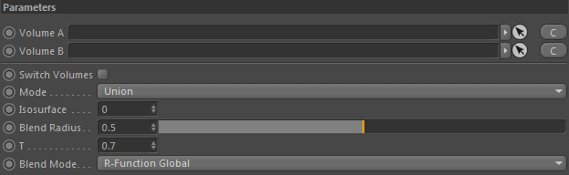
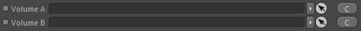
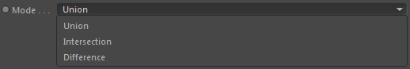
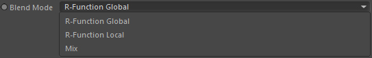

Parameters
Display
Parameters

Switch Volumes
Switches Volume A and Volume B order.
Volume A

Takes the first volume (this can be a volume, another csg or a surface reconstructor)
Volume B
Takes the second volume.
Mode

This defines the boolean operation performed on the volumes.
Union
Returns the union of the both volumes.
Intersection
Returns only the volume area where the two volumes intersect.
Difference
Returns only the volume area where the two volumes differ.
Isosurface
Moves the surface (distance) of the resulting volume (surface). The surface of the volume is normally located at 0.0 distance but with this value you can easily extent or shrink the volume area.
Blend radius
R-Function setting. Experimental and undocumented.
T
R-Function setting. Experimental and undocumented.
Blend Mode

Currently only the Mix mode works reliably and will allow you to blend linearly between the given volumes.
The R-Function modes are still experimental/undocumented. Use at your own risk.